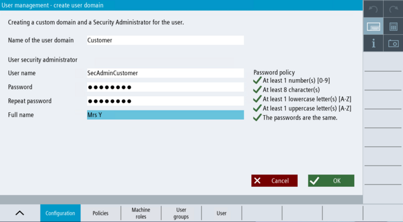

If you want to create a separate domain for the end user, you can do this via the "Create end user domain" dialog.
| Note |
What does the manufacturer do? / What does the end user do?We recommend that the Security admin of the manufacturer, after creating the manufacturer domain, creates a separate domain with users / roles / passwords for the end user. When the machine is handed over to the end customer, this data can be transferred to the end customer in confidence. |
User management is activated.
A local domain for the manufacturer is defined and the security administrator for the manufacturer is set up.
You have the "Security admin manufacturer" role.

Creating a local end user domain
|
The local end user domain is defined.
The security administrator for the end user is set up.
You are logged in to the system as Security admin end user.
Optionally, you can connect the local end user domain with a central user management.
You can set up local user groups, central user groups and local users for your domain.
You can delete the local end user domain.